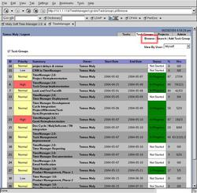

Task Groups may only be edited by their owner. All other people see them as read-only. Changes to a task group / milestone do not take effect until you click on 'Save'.
- Opening the Task Group Edit Window
- Start / Due Date
- Status, Percent, Hours
- Adding New Tasks
- Adding Existing Tasks
- Task Bulk Changes
- View Active Tasks
- Gantt Chart
- Opening the Task Group Edit Window:
- Start / Due Date:
- Status, Percent, Hours:
- Adding New Tasks:
- Adding Existing Tasks:
- Task Bulk Changes:
- View Active Tasks:
- Gantt Chart:
From the task group browse, task group search or project overview pages, one can click on the ID or summary of a task group to open the edit window.


The start and due dates reflect the ideal earliest start date and latest due date of the tasks that it encompasses. However, it is not an enforced restriction if there is some sort of overflow. Dates can be set via the calendar.
The status, percent, and hours (actual versus estimated) are all automatically calculated from the contained tasks. It provides a quick glance as to how well the goal is being and going to be met.
One can add new tasks to the milestone by clicking on 'Add Existing Task'. Make sure you save both the task and the task group/milestone for the linking to take effect.
You can perform changes on all (or some) f the tasks within the task group/milestone, by clicking on the 'Bulk Change' link. For example, you may be rescheduling a delayed project.
You may filter out completed tasks to just see what is remaining to be finished by clicking on the 'View Active' link. To go back and see all tasks, you can then click on 'View All'.
You can access the Gantt Chart by clicking on the 'Gantt' button at the top of the screen.